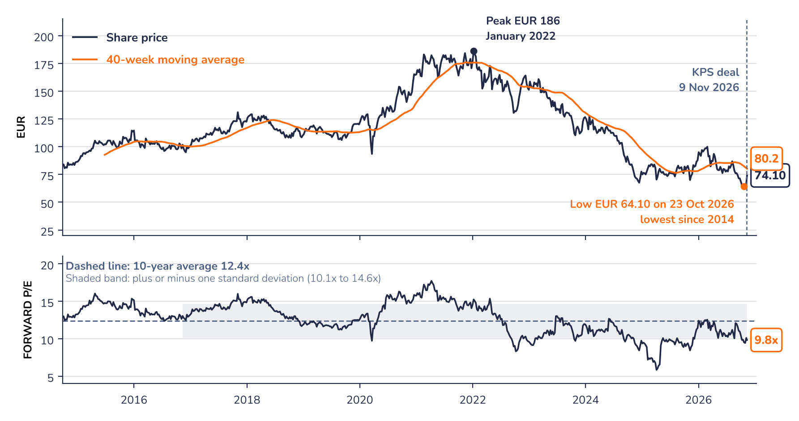

Mayr-Melnhof Karton AG (MMK AV)

What the company does
MM is the world's largest producer of recycled cartonboard outside China. After the deal it becomes a board and paper producer with about EUR 2.0bn of sales, net cash and a 30% stake in its former Packaging business.
Why it could do well
The deal turns a complex group into something simple to value. The consensus earnings estimate was raised from EUR 6.61 to EUR 7.55 per share in the week of the deal, and Board & Paper would gain most from any recovery in board prices.
Where the share stands
The share is still about 60% below its January 2022 peak (EUR 186) and below its 40-week average (EUR 80.2). A move back above that level could confirm the deal has changed the trend; the October low of EUR 64.10 is the level to watch on the downside. The trap would be a long downturn in board prices and cash spent on acquisitions rather than returned.
After the cash and the stake, an investor buys a European board and paper business for about EUR 0.2bn at a low point of its cycle. The case suits investors with a 2027 horizon who see a recovery in board prices as an option rather than a certainty.